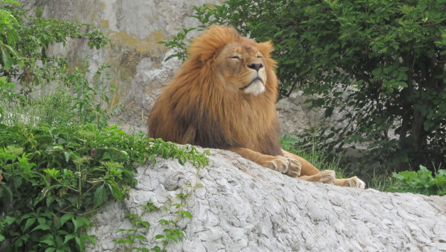

Lew- król zwierząt

lew- ssak drapieżny z rodziny kotowatych. Występuje w Afryce, na południe od Sahary, i w północno-zachodnich Indiach.
CIEKAWOSTKI
Lew zawsze był symbolem siły, mocy i dzikości. Podczas wycieczek do Afryki, zobaczenie majestatycznego lwa z bliska z pewnością będzie ciekawym przeżyciem. Zapoznajcie się z informacjami, ciekawostkami i faktami o lwach.
1. Lwy mogą osiągnąć prędkość do 81 kilometrów na godzinę, ale niezbyt długo, ponieważ w miarę szybko się męczą sprintem.
2. Afrykańskie lwy są najbardziej towarzyskie ze wszystkich dużych kotów i żyją razem w grupach która składa się z kilkunastu lwów.
3. Lwy mają dobry wzrok w nocy. Są 6 razy bardziej wrażliwe na światło niż ludzie. To daje im wyraźną przewagę nad niektórymi gatunkami ofiar podczas polowań nocnych.
4. Tym majestatycznym kotom grozi utrata siedliska. Lew jest wpisany na Czerwoną Listę Gatunków Zagrożonych IUCN.
5. Lwy afrykańskie są największymi z kotów afrykańskich. Samce osiągają wysokość w łapach około 1,2 metra i ważą około 150 – 225 kg. Samice osiągają wysokość 1 metra i ważą 110 – 150 kg.
6. Starożytni Egipcjanie czcili lwy jako swoje wojenne bóstwa ze względu na ich siłę, moc i zaciekłość. Słynne sfinksy są tylko jednym z wielu mitycznych przedstawień lwa w kulturze egipskiej.
7. Jak rozpoznać samca lwa? Będzie on miał wielką kudłatą grzywę. Jeśli ma ciemniejsze grzywę, będzie popularny wśród pań.
8. Lwy lubią się relaksować i leniuchować. Każdego dnia spędzają od 16 do 20 godzin na odpoczynku i spaniu. Mają niewiele gruczołów potowych, więc rozsądnie starają się oszczędzać energię odpoczywając w ciągu dnia i stają się bardziej aktywne w nocy, kiedy jest chłodniej.
9. Kiedyś lew występował w całej Afryce, Azji i Europie, ale obecnie żyje tylko w Afryce, z jednym wyjątkiem. Ostatnie pozostałe lwy azjatyckie znajdują się w Parku Narodowym Sasan-Gir w Indiach. W Parku znajduje się około 350 lwów.
10. W wieku od 3 do 4 lat, samce i samice są gotowe do kojarzenia się. Samica ma okres ciąży około czterech miesięcy.
11. Ryk lwa słychać już z odległości 8 kilometrów.
12. Kolor sierści lwa różni się w zależności od regionu, a także w obrębie populacji. Stwierdza się jednak, że lwy, które żyją w miejscach, gdzie jest chłodniej mają mają zazwyczaj ciemniejszą sierść – jak np. lwy przystosowane do życia na pustyni w Namibii.
13. Lwy azjatyckie są nieco mniejsze od lwów afrykańskich.
14. Najcięższy lew ważył 375 kilogramów.
15. Samica rodzi do sześciu młodych z dala od innych lwów i ukrywa młode przez pierwsze sześć tygodni ich życia. Po porodzie młode mają około 1,5 kg wagi. Są one całkowicie zależne od matki.
16. Mimo że lew jest czasami nazywany „królem dżungli”, w rzeczywistości żyje tylko na łąkach i równinach.
17. Są one zwierzętami narodowymi Albanii, Belgii, Bułgarii, Anglii, Etiopii, Luksemburga, Holandii i Singapuru.
18. Samica lwa potrzebuje 5 kilogramów mięsa dziennie, a samiec 7 kilogramów lub więcej.
19. Jeśli chodzi o pazury, lwy mają cztery na tylnych łapach, a pięć na przedniej.
20. Populacja lwów w Afryce zmniejszyła się o połowę od początku lat 50-tych XX wieku. Obecnie w całej Afryce pozostało mniej niż 21 tysięcy osobników.
21. Lwy mogą żyć na wolności przez około 12 do 16 lat. W niewoli mogą żyć do około 25 roku życia.